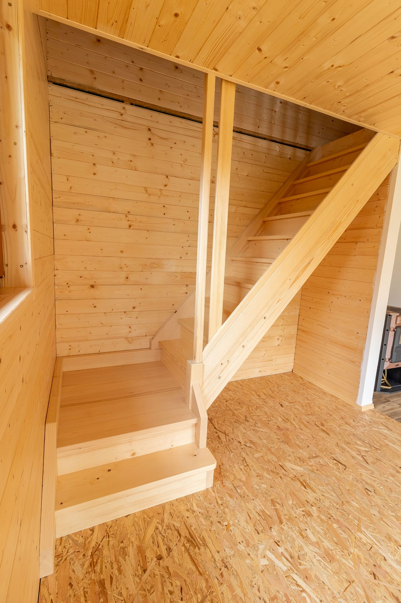

Krovy a nosné konstrukce
Přesné tesařské řešení pro nové střechy i dřevěné konstrukce, kde rozhoduje stabilita a návaznost na další vrstvy.


Tesařské, pokrývačské a klempířské práce v Jihlavě a okolí
Tesařství Jihlava
Krovy, střechy, terasy i dřevěné prvky řešíme tak, aby spolu držely funkčně, materiálově i v každodenním provozu.
Rozsah prací
Nosná konstrukce, ochrana stavby i finální detail mají fungovat dohromady. Proto řešíme celek, ne izolované kroky.
Přesné tesařské řešení pro nové střechy i dřevěné konstrukce, kde rozhoduje stabilita a návaznost na další vrstvy.
Krytina, oplechování a zakončení, které mají stavbu spolehlivě chránit a současně působit čistě v celkovém výrazu.
Dřevěné realizace pro každodenní používání, u kterých je stejně důležitá odolnost, pohodlí i poctivě vyřešený detail.

Proč takto pracujeme
Teplý materiálový dojem je důležitý, ale dlouhodobou kvalitu drží hlavně správná konstrukční logika a čisté návaznosti.
Volíme řešení podle zatížení, polohy stavby a toho, jak bude výsledek opravdu sloužit.
Hrany, oplechování i zakončení řešíme dřív, než začnou být problémem až na konci zakázky.
Od první domluvy je jasné, co navazuje na co, kde je potřeba rozhodnutí a co bude výsledkem.
Postup a typické realizace
Zakázku vedeme od zaměření přes volbu řešení až po čisté provedení na místě. Díky tomu se krov, krytina, klempířské prvky i dřevěné doplňky nepotkávají náhodou.

Ujasníme si místo, zatížení stavby a to, co má výsledek dlouhodobě unést.
Hledáme skladbu a detail, které dávají smysl z hlediska konstrukce, údržby i výsledného dojmu.
Pohlídáme návaznosti mezi profesemi a čisté provedení v místech, kde se rozhoduje o životnosti.
Zakázku uzavíráme srozumitelně, aby bylo jasné, jak na výsledek navázat v provozu i údržbě.
Rodinný dům
Když je potřeba sladit nosné řešení, krytinu i oplechování do jednoho funkčního celku.
Exteriér domu
Dřevěné konstrukce, které musí dobře fungovat venku, přirozeně stárnout a držet čistý výraz.
Interiér
Řešení, kde je dobře vidět materiál, přesnost opracování a návaznost na okolní prostor.
Kontakt
Ozvěte se s novou střechou, rekonstrukcí nebo dřevěným prvkem. Navážeme na charakter stavby a doporučíme další praktický krok.
info@tesarstvi-jihlava.cz +420 603 176 612